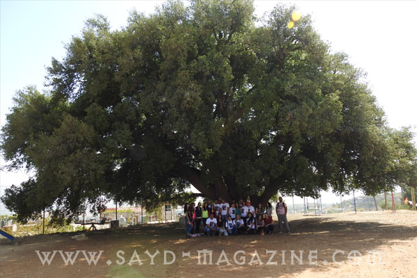
من ضمن النشاطات المشتركة بين مركز الشرق الاوسط للصيد المستدام وجمعية حماية الطبيعة في لبنان ومجلة صيد مع الويست بقاع كونتري كلوب اطلق مشروع " ع طبيعتي " الذي يهدف الى التمتع بجمال الحمى في فصل الخريف والربيع حيث تقدم الطبيعة افضل ما عندها من جمال. وهكذا انطلقت مجموعة من شباب وصبايا صباح السبت 21 تشرين الاول 2017 بعد تناول الترويقة على الصاج في بوسطة " عمو عفيف" نحو شجرة السنديان التاريخية في حمى خربة قنافار "عمرها حوالي 2000 سنة" والتي يجاورها مقام الشيخ مسافر والد الشيخ عدي من اولياء الديانة الايزيدية. ثم انطلق الجميع سيرا على الاقدام نحو مزرعة ابقار هولندية اصيلة في حمى الخربة تلاها تلة الصليب المطلة على السهل وعلى جبل الشيخ وعلى محمية ارز الشوف،ثم نحو "شاتو قنافار" لتذوق النبيذ والاتجاه نحو حمى عين زبدة بين اشجار السنديان وكروم العنب حتى بيت الضيافة عند السيدة نهى ابو راشد لتناول الغذاء القروي الصحي. وبعدها انطلقت المجموعة مجددا في البوسطة نحو الويست بقاع كونتري كلوب للسهر والعشاء حول النار على صوت وعزف الفنان مرسيل نصر على العود ثم المنامة في شاليات والاستيقاط لتناول الترويقة الصباحية الفاخرة الاحد صباحا . وهذا المشروع قد اقيم بملغ رمزي حيث يحصل " الكوبل " على كل هذه الخدمات مقابل 180 دولار فقط لتشجيع الناس على التواصل اكثر من الطبيعة والقضاء نهاية اسبوعحافلة ومنوعة بنكهة المغامرة. وسيقام طيلة فصل الخريف ومع ابتداء فصل الربيع . لاجل الاستفسار الاتصال بالويست بقاع كونتري كلوب على الرقم 08645601/2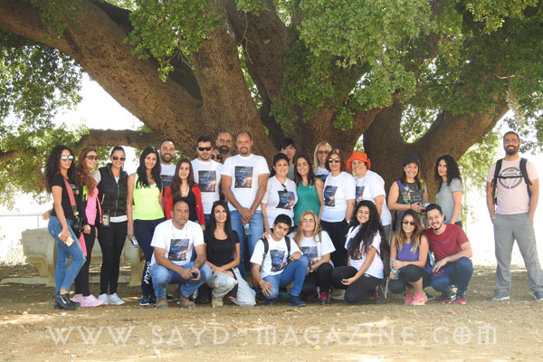
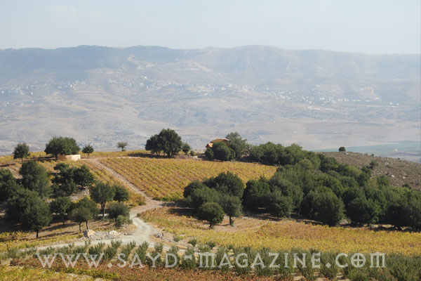
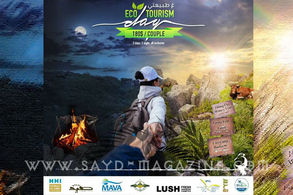
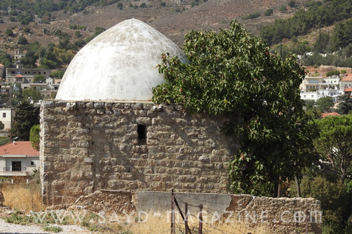
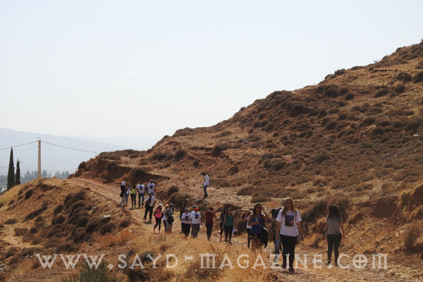
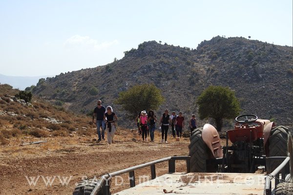
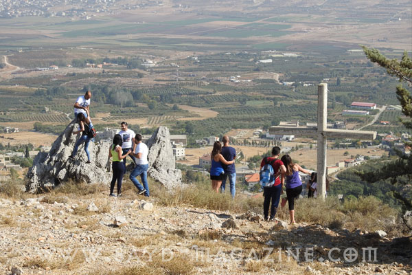
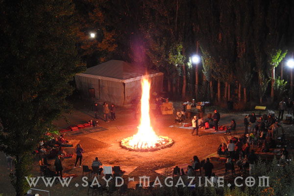
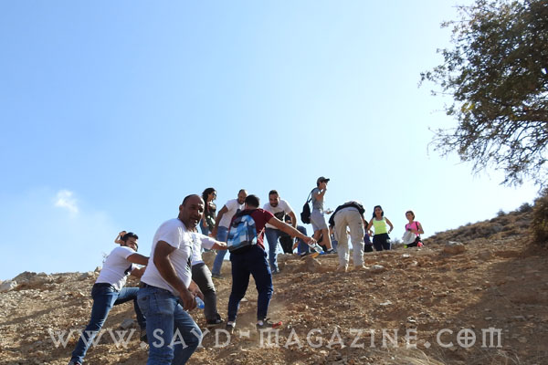
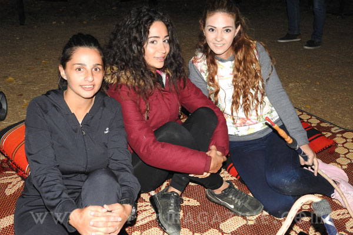
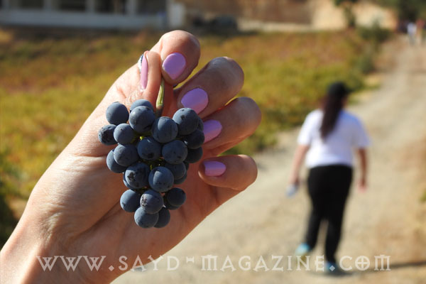